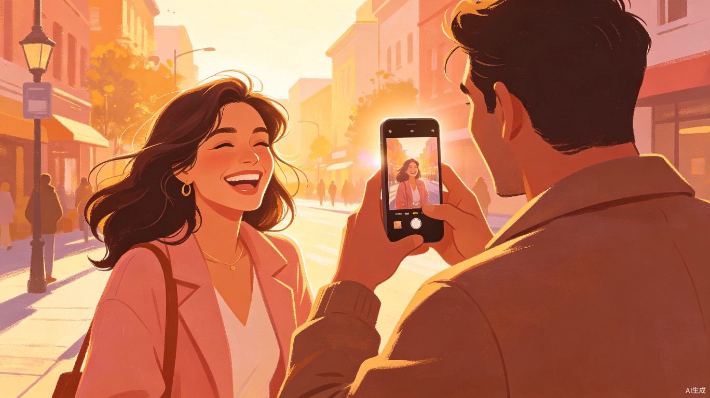
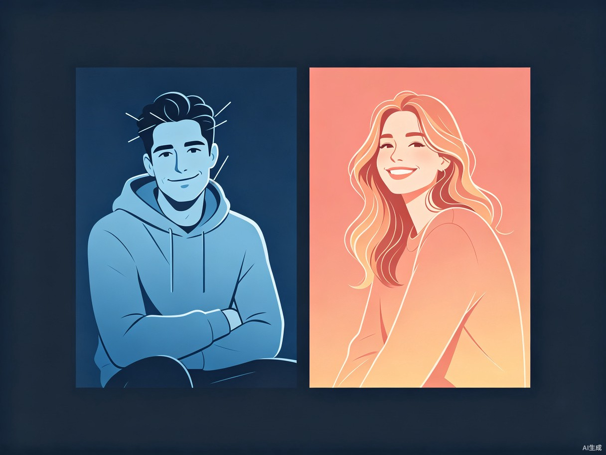
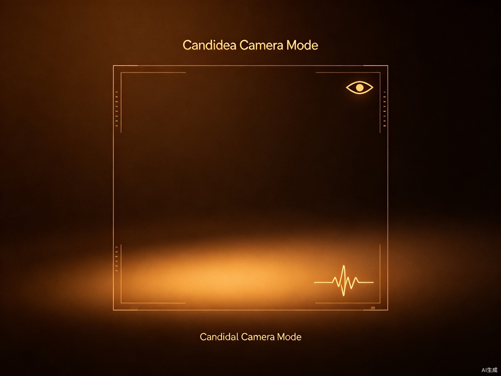
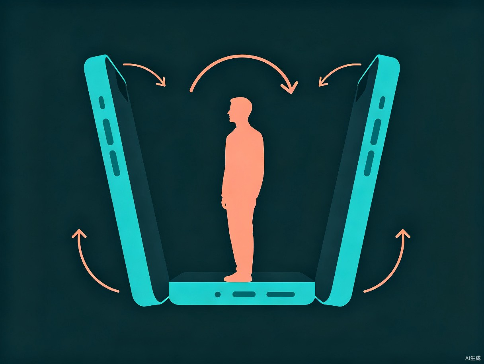
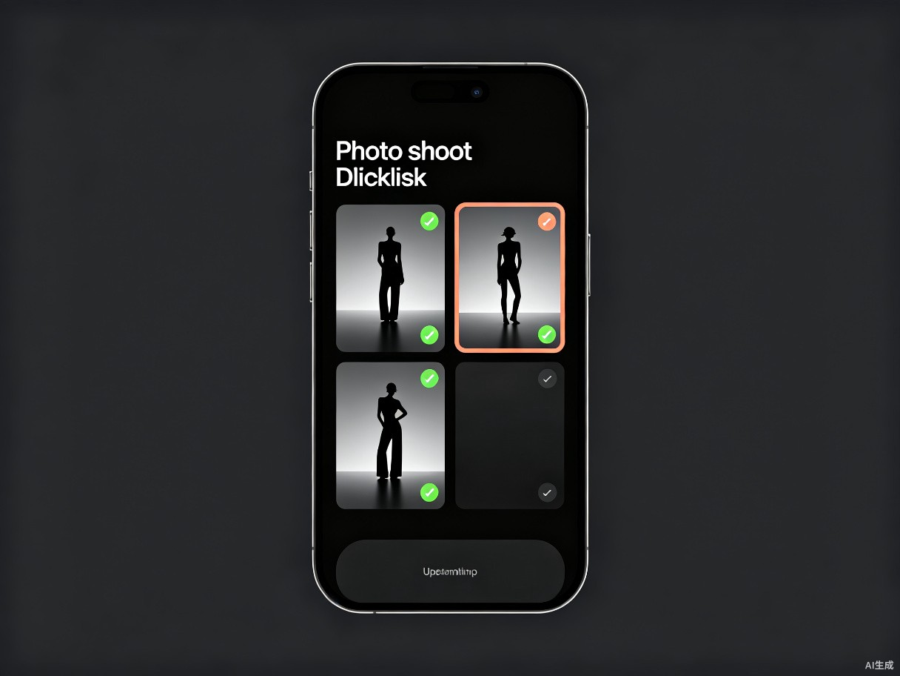
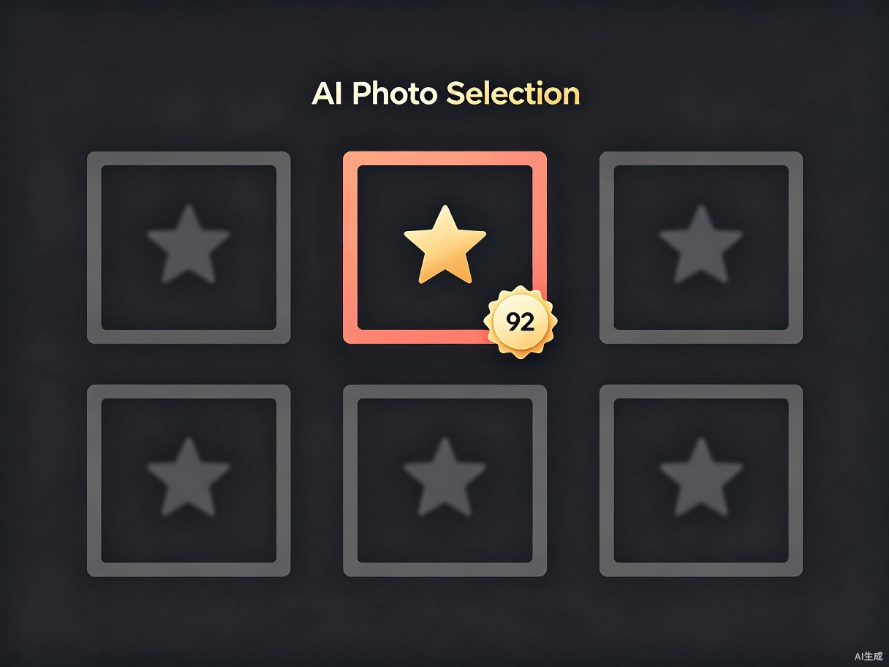

不是教他构图法则，不是教他光线角度。
而是真正理解"为什么拍出来丑"——然后在他按下快门之前，悄悄帮他解决问题。

"他拍出来的我，根本不像我。"
这不是构图问题，不是光线问题。是男朋友每次都用错误的角度和错误的时机按下快门。同一个 165cm 的女生，他能拍出 155 的效果；同一个会笑的人，他能拍成面瘫。
"笑一下"→ 表情僵硬 → 越笑越假 → 拍出来像证件照。女生面对镜头时本能紧张，引导线越多越紧张。
女生在看风景、撩头发、回头的瞬间按下快门——表情最自然，姿态最放松，这才是"好看的她"。

角度不对导致脸大、腿短、比例失调。女生最在意的不是构图，是"像不像我"
摆拍让表情僵硬。真正好看的照片几乎都是抓拍——但男朋友不知道什么时候该按快门
站在同一个地方拍 10 张角度差不多的。脑子里没有"接下来拍什么"的拍摄脚本
翻到第 20 张就开始崩溃，"怎么张张都不好看"。最后一张都不想发朋友圈
这是整个产品最核心的差异化功能。进入抓拍模式后，相机界面没有任何引导线和提示——所有 AI 检测在后台静默运行。
系统持续监测人物的面部表情（ML Kit 33 关键点中的嘴部和眼部）和身体姿态。当检测到自然微笑、姿态放松、光线良好的瞬间，自动触发快门。
女朋友根本不知道什么时候被拍的——这才是她最好看的状态。抓拍 3-5 张后进入评分选片页面，直接给出最好的结果。

同一个女生，平拍显脸大、微仰拍显下巴线条、微俯拍显腿长——角度差 5°，效果差很多。
系统根据当前取景范围（全身/半身/特写）自动计算最佳俯仰角：拍半身像推荐 -5° 微仰拍让脸型更好看；拍全身像推荐 +10° 微俯拍让腿部比例更优。手机陀螺仪实时读取角度，偏差过大时用最简单的语言提示——"手机稍微抬高一厘米"。
不需要用户理解角度数值，只需要跟着做。

选好场景后，系统自动生成一个 3-5 张的拍摄清单：
"拍一张全身站姿 → 拍一张回头看的 → 拍一张看手机的 → 拍一张局部特写"
每完成一张自动打勾。拍摄者不再面对空白镜头发呆——他心里有了一张地图。不同场景和风格（甜美/酷飒/文艺）对应不同的脚本模板。

拍完 30 张，翻到第 10 张就想删 App 了。
系统自动从所有照片中筛选出最好的 3 张推荐给用户。筛选维度不是冷冰冰的技术评分——而是模拟"女生觉得好看"的标准：表情自然度（嘴部关键点是否放松微笑）、身材比例（角度是否让腿部更修长）、画面干净度（背景是否杂乱）。
直接给结果，不需要翻 50 张。

不是所有时候都适合抓拍。有时候就是想拍一张"摆好姿势的正式照"。所以产品提供两种并列模式，用户自选。
屏幕上显示姿势轮廓虚线，分三阶段引导：先调距离 → 再调位置 → 最后对姿势。轮廓变绿时按下快门。适合想拍"有设计感的照片"的场景。
界面干净无引导，AI 在后台静默检测。检测到自然微笑+放松姿态+良好光线的瞬间自动按下快门。适合想要"真实好看"的场景。
纯端侧方案，所有 AI 推理在设备本地完成。零网络依赖，零隐私风险。
33 个人体关键点实时检测，驱动姿势匹配与表情识别
分析嘴部关键点曲率和眼部开合度，判断真实自然微笑 vs 僵硬假笑
实时读取手机俯仰角，结合拍摄距离计算最佳角度
逐帧计算画面亮度分布，作为光线评分和抓拍触发条件之一
表情自然度 + 身材比例 + 画面干净度，模拟"女生觉得好看"的标准
姿势轮廓、构图辅助线、角度仪表盘全部用 Canvas 实时绘制